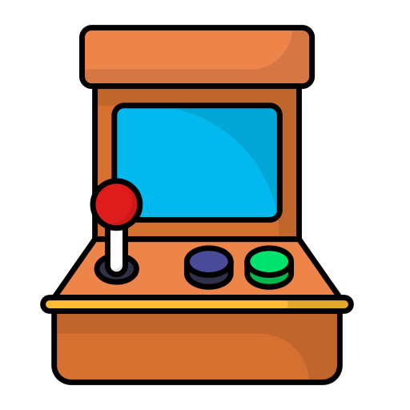
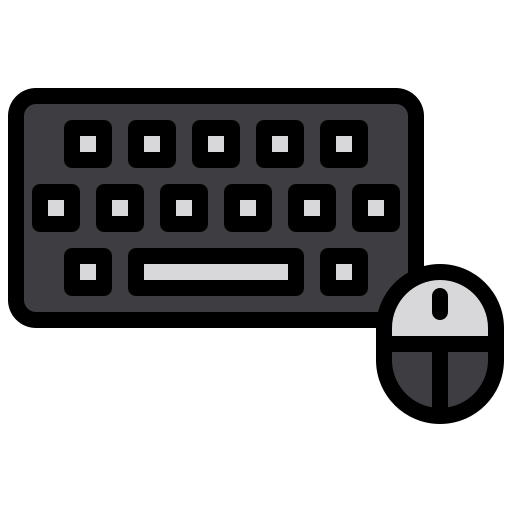

Historia de los videojuegos - Línea temporal
Después del 1950, se tienen los años de nacimiento y experimentación...
 Decada de 1950 - Orígenes experimentales
Decada de 1950 - Orígenes experimentales
- 1952 – OXO: Primer videojuego conocido (versión digital del tres en raya).
- 1958 – Tennis for Two: Juego creado en un osciloscopio, precursor de Pong.
Década de 1960 - Innovaciones y experimentación
- 1962 – Spacewar!: Uno de los primeros videojuegos de combate espacial.
- 1966 – Chase: Primer videojuego en utilizar gráficos en movimiento.
Década de 1970 - Nacimiento de la industria
- 1972 – Pong (Atari): Primer videojuego comercialmente exitoso.
- 1978 – Space Invaders: Popularizó las recreativas y marcó el inicio del fenómeno arcade.
 Década de 1980 - Edad dorada de los arcades y consolas
- 1980 – Pac-Man: Icono cultural y referente de los videojuegos.
- 1981 – Donkey Kong: Introducción de Mario (Jumpman).
- 1985 – Super Mario Bros. (Nintendo NES): Revolucionó el diseño de plataformas y consolidó a Nintendo.
- 1986 – The Legend of Zelda: Abrió camino a la exploración y aventura.
Década de 1989 - Juegos de puzzle y portátiles
- 1989 – Tetris (Game Boy): Popularizó el juego portátil.
Década de 1990 – Consolas de 16/32 bits y 3D
- 1991 – Sonic the Hedgehog (Sega): Rival directo de Mario, icono de Sega.
- 1992 – Mortal Kombat: Introducción de violencia gráfica, influyó en la creación de la ESRB.
- 1996 – Pokémon (Game Boy): Fenómeno mundial de RPG y coleccionismo.
- 1996 – Super Mario 64 (Nintendo 64): Marcó el estándar en juegos 3D.
- 1997 – Final Fantasy VII (PlayStation): Expansión del RPG japonés a escala global.
Años 2000, auge de los videojuegos y evolución exponencial...
Década de 2000 – Online y realismo gráfico
- 2001 – Halo: Combat Evolved (Xbox): Definió el FPS en consolas.
- 2004 – World of Warcraft: Popularizó los MMORPG online.
- 2006 – Wii Sports (Nintendo Wii): Introdujo el control por movimiento.
- 2007 – Call of Duty 4: Modern Warfare: Revolucionó los shooters multijugador.
 Década de 2010 – Expansión masiva y eSports
- 2011 – Minecraft: Juego creativo más vendido de la historia.
- 2013 – The Last of Us: Elevó la narrativa en videojuegos.
- 2016 – Pokémon GO: Llevó la realidad aumentada al público masivo.
- 2017 – Fortnite: Popularizó el battle royale y los juegos como servicio.
 Década de 2020 – Juegos como plataforma social
Década de 2020 – Juegos como plataforma social
- 2020 – Animal Crossing: New Horizons: Fenómeno en pandemia.
- 2020 – Among Us: Popularidad global gracias al juego social online.
- 2022 – Elden Ring: Referente moderno de mundo abierto desafiante.
Galería de imágenes
Títulos "clásicos"
-

OXO
-

Tennis for Two
-

Pong
-

Space Invaders
-

Pac-Man
-

Super Mario Bros
Títulos "futuristas"
-

Halo
-

World of Warcraft
-

Call of Duty
-

Minecraft
-

Fortnite
-

Elden Ring
Sección interactiva con formulario
Si deseas dejar tu opinión, por favor completa el siguiente formulario: